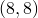

move <plot number> to <x>, <y>
The move command is part of the multiplot environment; it can be used to move items around on a multiplot page. The item to be moved should be specified using the reference number which it was given when it was created; it would have been displayed on the terminal at that time. For example:
move 23 to 8,8
This would move multiplot item 23 to position  centimetres. If this item were a plot, the end result would be the same as if the command set origin 8,8 had been called before it had originally been plotted.